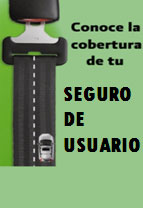

Recomendaciones a usuarios

Funcionario de CAPUFE obtiene Premio Nacional de Administración Pública
Funcionario de CAPUFE obtiene Premio Nacional de Administración Pública
Relevante


Sanciones a licitantes, proveedores y contratistas

¿Conoces las condiciones del seguro del usuario?
CAMINOS Y PUENTES FEDERALES DE INGRESOS Y SERVICIOS CONEXOS, MÉXICO - ALGUNOS DERECHOS RESERVADOS © 2010 - POLÍTICAS DE PRIVACIDAD
Calzada de los Reyes 24 Col. Tetela del Monte C.P. 62130 Cuernavaca Morelos MÉXICO - Tels. (55)5200-2000 (777)329-2100